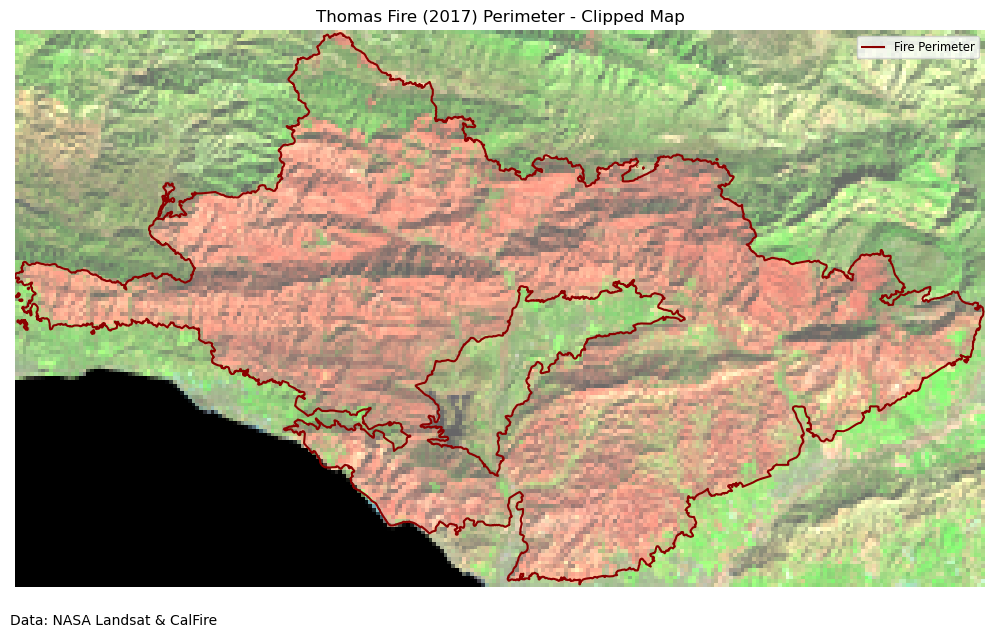

import os
import numpy as np
import pandas as pd
import matplotlib.pyplot as plt
import geopandas as gpd
import rioxarray as rioxr
from shapely import box
from IPython.display import ImageLink to repo (more content available here!)
Overall Structure
The notebook is divided into two main sections:
- Fire Perimeter Visualization - Creating true and false color visualizations of the Thomas Fire area using Landsat data
- Land Cover Statistics - Analyzing the types of land cover affected by the fire
About
Purpose: This analysis explores the 2017 Thomas Fire using two main approaches:
- Creating visualizations of the fire perimeter and burn area using Landsat satellite imagery
- Analyzing the types and distribution of land cover affected by the fire
Using historical fire perimeter data from CalFire combined with Landsat imagery, we create detailed maps showing both true-color and false-color visualizations of the Thomas Fire area. Here we use historical fire perimeter data from CalFire to obtain the perimeter of the 2017 Thomas Fire. Using provided Landsat imagery and the fire perimeter, we create a map showing the perimeter of the 2017 Thomas Fire in relation to Santa Barbara County.
We then analyze land cover data to understand what types of ecosystems were impacted by the fire. Using the GAP/LANDFIRE National Terrestrial Ecosystems data for 2011 from the US Geological Survey (USGS), we calculate the area of each land cover type within the fire perimeter and compare it to the total area of each land cover type in Santa Barbara County.
Highlights:
- Cleaning data
- Label-based selection
- Geospatial file creation
rioxarrayraster file manipulation- True color imagery plotting
- False color imagery plotting
- Pixel-based land cover calculations
- Area and percentage computations
Dataset Descriptions:
Section 1:
The landsat data is a simplified collection of bands from the Landsat Collection 2 Level-2 atmospherically corrected surface reflectance data, collected by the Landsat 8 satellite. This data was retrieved from the Microsoft Planetary Computer data catalogue and pre-processed to remove data outside land and coarsen the spatial resolution.
California’s Fire and Resource Assessment Program (FRAP) maintains a comprehensive database of historical fire perimeters throughout the state, covering both public and private lands. This GIS dataset is updated annually through a collaborative effort between FRAP and several federal agencies - the U.S. Forest Service Region 5, Bureau of Land Management, National Park Service, and Fish and Wildlife Service.
Section 2:
The GAP/LANDFIRE National Terrestrial Ecosystems data for 2011 @davidson_gaplandfire_2016, from the US Geological Survey (USGS) is a categorical raster with a 30 m x 30 m pixel resolution representing highly thematically detailed land cover map of the U.S.
The class names and corresponding codes have been saved to a separate CSV to simplify access. Further information on how to access the classes directly from the data are available in the MPC catalog.
Please see end for references
Section 1: Fire Perimeter Visualization
Data Loading and Initial Processing
# Load fire perimeter data from a geodatabase file
fire_perimeter = gpd.read_file(os.path.join("data", "fire23_1.gdb"))
fire_perimeter.head()
# Convert columns to lowercase for consistency
fire_perimeter.columns = fire_perimeter.columns.str.lower()print(
f"Fire Perimeter CRS: {fire_perimeter.crs} \nIs this projected?: {fire_perimeter.crs.is_projected}"
)Fire Perimeter CRS: EPSG:3310
Is this projected?: TrueThe fire perimeter data uses EPSG: 3310, which is a projected coordinate reference system specifically designed for California.
Thomas Fire Perimeter
Let’s create a mask of the Thomas Fire perimeter. First, filter the historical fire perimeters dataset to the 2017 Thomas Fire and then save as a geospatial file in the data/ directory.
# Filter to the 2017 Thomas Fire
thomasfire = fire_perimeter.loc[
(fire_perimeter["fire_name"] == "THOMAS") & (fire_perimeter["year_"] == 2017)
]Create a visualization of the Thomas Fire perimeter using geopandas and matplotlib.
# Plot the perimeter
fig, ax = plt.subplots(figsize=(10, 8))
ax.axis("off")
thomasfire.plot(
ax=ax,
color="firebrick",
)
# Set title
ax.set_title("Thomas Fire (2017) Perimeter Mask")
# Add source information with adjusted position
plt.figtext(0.01, 0.02, "Data: CAL FIRE", ha="left", fontsize=10)
# Adjust layout
plt.tight_layout()
plt.subplots_adjust(bottom=0.05)
plt.show()# Save file to the data folder in `.geojson` format.
thomasfire.to_file("data/thomasfire.geojson", driver="GeoJSON")GeoJSON is an open standard format that can represent a variety of geometries. It is based on JavaScript Object Notation (JSON), and is commonly used to store spatial data.
Landsat Data Processing
To plot true and false color images, we will use the Landsat 8 satellite imagery from January 26, 2018, shortly after the Thomas Fire. The data includes several spectral bands:
- Red, Green, Blue (visible light)
- NIR (Near Infrared)
- SWIR (Short-wave Infrared)
The landsat data is accessed from UCSB Bren’s workbench-1 server at:
/courses/EDS220/data/hwk4_landsat_data landsat8-2018-01-26-sb-simplified.nc
# Import data
root = os.path.join("/", "courses", "EDS220", "data", "hwk4_landsat_data")
fp = os.path.join(root, "landsat8-2018-01-26-sb-simplified.nc")
landsat = rioxr.open_rasterio(fp)Let’s do some preliminary data exploration to understand the structure of the data.
# Check CRS of data and dimensions
print(
f"{'Landsat 8 CRS:':<25} {landsat.rio.crs}\n"
f"{'Is it projected?':<25} {landsat.rio.crs.is_projected}\n"
f"{'Sizes of dimensions:':<25} {dict(landsat.sizes)}"
)Landsat 8 CRS: EPSG:32611
Is it projected? True
Sizes of dimensions: {'band': 1, 'x': 870, 'y': 731}print(landsat)<xarray.Dataset> Size: 25MB
Dimensions: (band: 1, x: 870, y: 731)
Coordinates:
* band (band) int64 8B 1
* x (x) float64 7kB 1.213e+05 1.216e+05 ... 3.557e+05 3.559e+05
* y (y) float64 6kB 3.952e+06 3.952e+06 ... 3.756e+06 3.755e+06
spatial_ref int64 8B 0
Data variables:
red (band, y, x) float64 5MB ...
green (band, y, x) float64 5MB ...
blue (band, y, x) float64 5MB ...
nir08 (band, y, x) float64 5MB ...
swir22 (band, y, x) float64 5MB ...The landsat dataset has three dimensions: band, x, and y; it has variables for red, green, blue, near infrared 0.8, and short-wave infrared 2.2 bands. The coordinate reference system is EPSG: 32611 (projected).
The band dimension makes our raster three dimensional and is unnecessary. We can go ahead and “squeeze” the raster to simplify it:
# Drop the band dimension of the data
landsat = landsat.squeeze().drop_vars("band")True color image
Using the red, green, and blue bands from the landsat data, we can create a true-color visualization of Santa Barbara County.
# Create true color visualization using red, green, blue bands
landsat[["red", "green", "blue"]].to_array().plot.imshow()Clipping input data to the valid range for imshow with RGB data ([0..1] for floats or [0..255] for integers).
The plot is black and white; this is because there are a large number of high RGB values from clouds skewing the color scale for the plot.
Passing the robust=True parameter in plt.imshow prevents outliers from washing out the color scale of the plot. robust=True uses the 2nd and 98th percentiles of the data to compute the color limits. The adjusted output takes into account that the RGB values of the clouds are outliers.
# Set `robust=True` for better color scale when plotting
landsat[["red", "green", "blue"]].to_array().plot.imshow(robust=True)
Now, our image more closely resembles the true color of the landscape.
False color image
False color imagery is a useful tool for monitoring wildfire impacts. By assigning infrared bands to visible colors, these images highlight vegetation health, burn severity, and the extent of fire scars. This approach helps researchers and land managers assess recovery efforts, identify high-risk areas, and plan restoration strategies. To create a false color image, we will use the short wave infrared, near-infrared, and red bands from the Landsat data.
# Create false color visualization using SWIR, NIR and red bands
landsat[["swir22", "nir08", "red"]].to_array().plot.imshow(robust=True)
To add the Thomas Fire perimeter we created earlier, import the file and make sure the CRS for landsat matches. This step is crucial because:
- Different data sources often use different CRS
- Mismatched CRS can cause spatial misalignment
- EPSG:3310 (California Albers) is optimal for California analysis
# Import the Thomas Fire perimeter
thomasfire = gpd.read_file(os.path.join("data", "thomasfire.geojson"))
# Reproject Landsat data to match fire perimeter CRS (coordinate reference system)
thomasfire.crs
landsat = landsat.rio.reproject("EPSG:3310")
assert landsat.rio.crs == thomasfire.crsLet’s create a clipped version to use for plotting.
# Create a false color image and clip it for plotting
falsecolor_thomasfire = landsat[["swir22", "nir08", "red"]].to_array()
falsecolor_clip = falsecolor_thomasfire.rio.clip_box(*thomasfire.total_bounds)Plot False Color Image with Thomas Fire Perimeter
# Create a map showing the false color image together with the Thomas Fire perimeter.
fig, ax = plt.subplots(figsize=(10, 8))
ax.axis("off")
falsecolor_thomasfire.plot.imshow(ax=ax, robust=True)
thomasfire.geometry.boundary.plot(
ax=ax, color="darkred", linewidth=1.5, label="Fire Perimeter"
)
ax.legend(fontsize="small")
plt.tight_layout()
plt.subplots_adjust(bottom=0.05)
ax.set_title("Thomas Fire (2017) Perimeter Map")
plt.figtext(0.01, 0.015, "Data: NASA Landsat & CalFire", ha="left", fontsize=10)
plt.show()
Let’s crop the map to see the fire scar more clearly.
# Create a clipped map showing the false color image and the Thomas Fire perimeter
fig, ax = plt.subplots(figsize=(10, 8))
ax.axis("off")
falsecolor_clip.plot.imshow(ax=ax, robust=True)
thomasfire.geometry.boundary.plot(
ax=ax, color="darkred", linewidth=1.5, label="Fire Perimeter"
)
ax.legend(fontsize="small")
plt.tight_layout()
plt.subplots_adjust(bottom=0.05)
ax.set_title("Thomas Fire (2017) Perimeter - Clipped Map")
plt.figtext(0.01, 0.12, "Data: NASA Landsat & CalFire", ha="left", fontsize=10)
plt.show()
Analysis of False Color Maps
The above maps use false color satellite imagery to display the burn scar from the 2017 Thomas Fire and its perimeter. Shortwave infrared (SWIR) is plotted in red, near infrared (NIR) in green, and the red band in blue. Newly burned soil reflects SWIR light strongly, and plants containing water reflect NIR strongly, which makes this false color image helpful for visualizing fire effects.
Section 2: Land cover statistics
This section will analyze the types of land cover affected by the Thomas Fire. We will use the GAP/LANDFIRE National Terrestrial Ecosystems data to identify the land cover types in the area of the Thomas Fire perimeter.
We use this ready-to-use raster and the terrestrial ecosystem labels at this directory within workbench-1:
/courses/EDS220/data/USGS_National_Terrestrial_Ecosystems_Over_Thomas_Fire_Perimeter/
# Import data
root = os.path.join(
"/",
"courses",
"EDS220",
"data",
"USGS_National_Terrestrial_Ecosystems_Over_Thomas_Fire_Perimeter",
)
fp1 = os.path.join(
root, "USGS_National_Terrestrial_Ecosystems_Over_Thomas_Fire_Perimeter.tif"
)
labels = pd.read_csv(os.path.join(root, "GAP_National_Terrestrial_Ecosystems.csv"))
lulc = rioxr.open_rasterio(fp1)
lulc<xarray.DataArray (band: 1, y: 1434, x: 2228)> Size: 6MB
[3194952 values with dtype=uint16]
Coordinates:
* band (band) int64 8B 1
* x (x) float64 18kB -2.136e+06 -2.136e+06 ... -2.07e+06 -2.07e+06
* y (y) float64 11kB 1.548e+06 1.548e+06 ... 1.505e+06 1.505e+06
spatial_ref int64 8B 0
Attributes:
TIFFTAG_SOFTWARE: ERDAS IMAGINE
TIFFTAG_XRESOLUTION: 1
TIFFTAG_YRESOLUTION: 1
TIFFTAG_RESOLUTIONUNIT: 2 (pixels/inch)
AREA_OR_POINT: Area
_FillValue: 0
scale_factor: 1.0
add_offset: 0.0We will remove the unnecessary band dimension from the raster.
# Remove length 1 dimension (band)
lulc = lulc.squeeze()
print("Sizes of dimensions:", dict(lulc.sizes))Sizes of dimensions: {'y': 1434, 'x': 2228}# Match CRSs and verify update
thomasfire_match = thomasfire.to_crs(lulc.rio.crs)
assert thomasfire_match.crs == lulc.rio.crs
# Plot the land cover data
lulc.plot()Compute land cover statistics
Next, we will compute land cover statistics within the Thomas Fire perimeter in the following steps:
- Use the
numpyfunctionnp.unique()to get the number of pixels per class inlulc_clip
np.unique(lulc, return_counts=True)[1]array([1927870, 6856, 361, 133704, 3638, 23150, 2907,
4974, 3727, 60203, 5102, 75925, 378, 11098,
29, 98, 64072, 69700, 183963, 454489, 88504,
799, 750, 684, 28, 90, 865, 262,
1329, 54, 44, 27, 298, 24, 15,
43, 7, 18996, 2181, 485, 13, 20,
10, 1858, 40653, 3782, 829, 58])- Create a data frame
pix_countswith two columns: the code numbers for the pixels inlulc_clipand the number of pixels corresponding to each code
pix_counts = {
"Class": np.unique(lulc),
"counts": np.unique(lulc, return_counts=True)[1],
}
pix_counts = pd.DataFrame(pix_counts)
pix_counts.head()| Class | counts | |
|---|---|---|
| 0 | 0 | 1927870 |
| 1 | 39 | 6856 |
| 2 | 40 | 361 |
| 3 | 41 | 133704 |
| 4 | 42 | 3638 |
- Use the
labelsdata frame to add the class names to the codes in thepix_countsdata frame. Store the resulting data frame asclasses.
# Rename the 'code' column in labels to match 'Class' in pix_counts
labels = labels.rename(columns={"code": "Class"})
# Merge the dataframes, excluding rows where Class = 0
classes = pd.merge(pix_counts[pix_counts["Class"] != 0], labels, on="Class", how="left")
classes.head()| Class | counts | class_label | |
|---|---|---|---|
| 0 | 39 | 6856 | California Central Valley Mixed Oak Savanna |
| 1 | 40 | 361 | California Coastal Closed-Cone Conifer Forest ... |
| 2 | 41 | 133704 | California Coastal Live Oak Woodland and Savanna |
| 3 | 42 | 3638 | California Lower Montane Blue Oak-Foothill Pin... |
| 4 | 43 | 23150 | Central and Southern California Mixed Evergree... |
- What area within the fire perimeter (in km^2) was estimated to be developed? The raster has a resolution of 30m.
# Area of the Thomas Fire in square kilometers
thomasfire_area_km = thomasfire.area / 1e6
thomasfire_area_km0 1140.367254
dtype: float64# Find the area of classes labeled as "Developed". These are located at 581-584.
area_km_developed = (
classes[classes.Class.isin([581, 582, 583, 584])].counts.sum() * 30 * 30 / 1e6
)
area_km_developed40.7898- What percent of the total area burned was developed?
print((area_km_developed / thomasfire_area_km * 100)[0], "% ")3.5769003248981366 % - Store the total number of pixels within the fire perimeter as a variable
total_pixels
total_pixels = classes.counts.sum()
total_pixels1267082- Add the percentage of area covered by each class as a new column percentage to the
classesdata frame. Sort the data frame by percentage coverage in descending order.
classes["percent"] = classes["counts"] / classes["counts"].sum() * 100
classes = classes.sort_values(by="percent", ascending=False)- Create a horizontal bar plot showing the classes with more than 1% land cover in decreasing order.
# Filter for classes with >1% coverage and sort by percent in descending order
filtered_classes = classes[
(classes["percent"] > 1) & (classes["Class"] != 0)
].sort_values("percent", ascending=True)
# Create the horizontal bar plot
plt.figure(figsize=(12, 8))
plt.barh(
filtered_classes["class_label"],
filtered_classes["percent"],
height=0.5,
color="lightblue",
edgecolor="black",
)
plt.xlabel("Percent Land Cover")
plt.ylabel("Class Label")
plt.title(
"Distribution of Land Cover within the Thomas Fire Perimeter, \nLand Cover (>1%)",
fontsize=16,
)
# Adjust margins
plt.margins(x=0.2)
for i, v in enumerate(filtered_classes["percent"]):
plt.text(v, i, f" {v:.1f}%", va="center")
plt.xticks(rotation=0)
plt.yticks(rotation=0)
plt.tight_layout()
plt.show()Conclusion
Here we see the Thomas Fire predominantly affected coastal and chaparral ecosystems, with over 56% of the burned area consisting of coastal scrub and mixed chaparral vegetation types. Oak woodlands and savannas made up another significant portion, accounting for about 18% of the affected area. Only a small percentage of the burned area was developed land, indicating that the fire primarily affected natural ecosystems. Understanding the distribution of land cover types affected by the fire can help inform future land management decisions and restoration efforts in the area, and plan future fire management strategies. These findings highlight the importance of managing and protecting California’s coastal scrub and chaparral ecosystems, which are naturally adapted to fire but face increasing pressure from climate change and altered fire regimes.
References
- Fire Resource and Assessment Program. (2024). Historical Fire Perimeters. CalFire. https://www.fire.ca.gov/what-we-do/fire-resource-assessment-program/fire-perimeters. Accessed: November 23, 2024.
- NASA Landsat 8 (2024). Landsat Collection 2 Level-2 Science Products. Microsoft Planetary Computer. https://planetarycomputer.microsoft.com/dataset/landsat-c2-l2. Accessed: November 23, 2024.
- U.S. Geological Survey. (2016). GAP/LANDFIRE National Terrestrial Ecosystems Data 2011. USGS. https://www.sciencebase.gov/catalog/item/573cc51be4b0dae0d5e4b0c5. Accessed: November 23, 2024.
- Galaz-Garcia, Carmen. (2024). EDS 220 Assignment 4. UCSB MEDS. https://meds-eds-220.github.io/MEDS-eds-220-course/assignments/assignment4.html. Accessed: November 23, 2024.
Citation
BibTeX citation:
@online{rubinstein2024,
author = {Rubinstein, Leilanie},
title = {Thomas {Fire:} {Perimeter} {Visualization} \& {Land} {Cover}
{Statistics}},
date = {2024-12-13},
url = {https://leirubinstein.github.io/posts/2024-12-04-thomas-fire-visualization/},
langid = {en}
}
For attribution, please cite this work as:
Rubinstein, Leilanie. 2024. “Thomas Fire: Perimeter Visualization
& Land Cover Statistics.” December 13, 2024. https://leirubinstein.github.io/posts/2024-12-04-thomas-fire-visualization/.